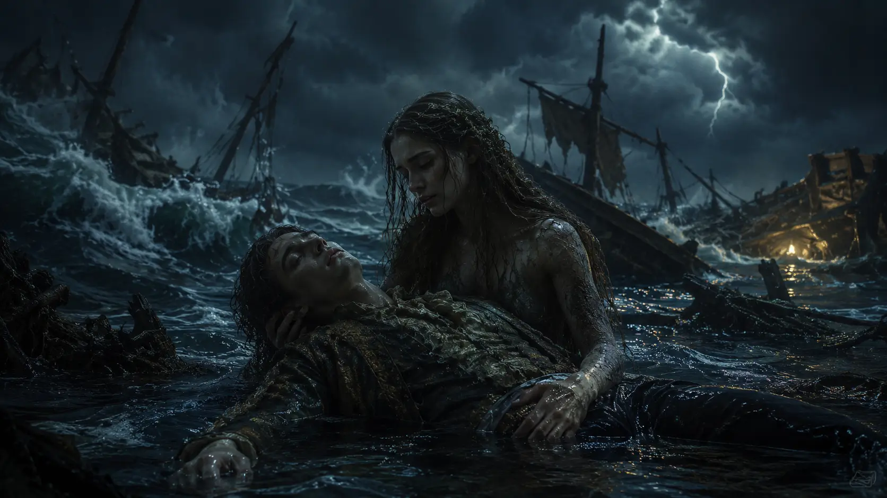
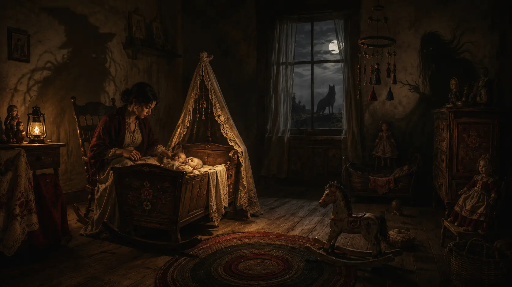

Era uma Vez · Antes da Disney, os contos eram mais sombrios
A Pequena Sereia: o conto em que o amor não salva ninguém
Antes de ganhar canções, cores brilhantes e um final feliz, a pequena sereia atravessou uma história de silêncio, dor, rejeição e desejo de possuir uma alma.
Ler artigo →

Psicologia · Medo e comportamento humano
Durma, ou alguma coisa virá buscar você
Por que tantas canções criadas para acalmar crianças falam de monstros, abandono, quedas e morte?
Ler artigo →
 Filosofia • Psicologia • Ego
Filosofia • Psicologia • Ego
Por que temos tanta necessidade de ter certeza?
Talvez o ser humano não busque a verdade tanto quanto busca segurança.
Ler artigo →
 Psicologia • Crenças • Comportamento Humano
Psicologia • Crenças • Comportamento Humano
O dia em que a crença vira identidade
Quando uma crença é questionada, o que realmente está sendo defendido?
Ler artigo →